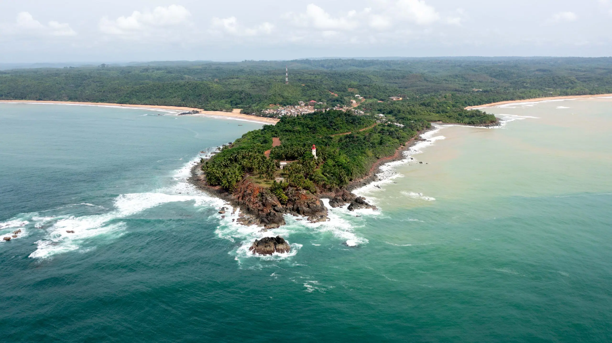
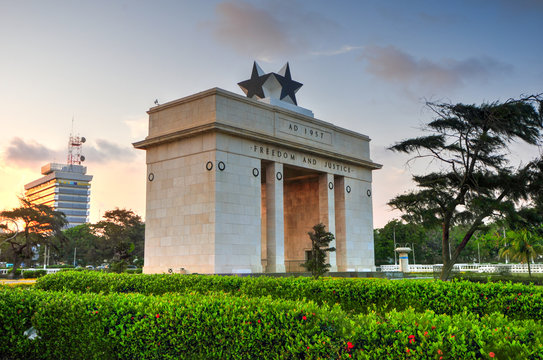
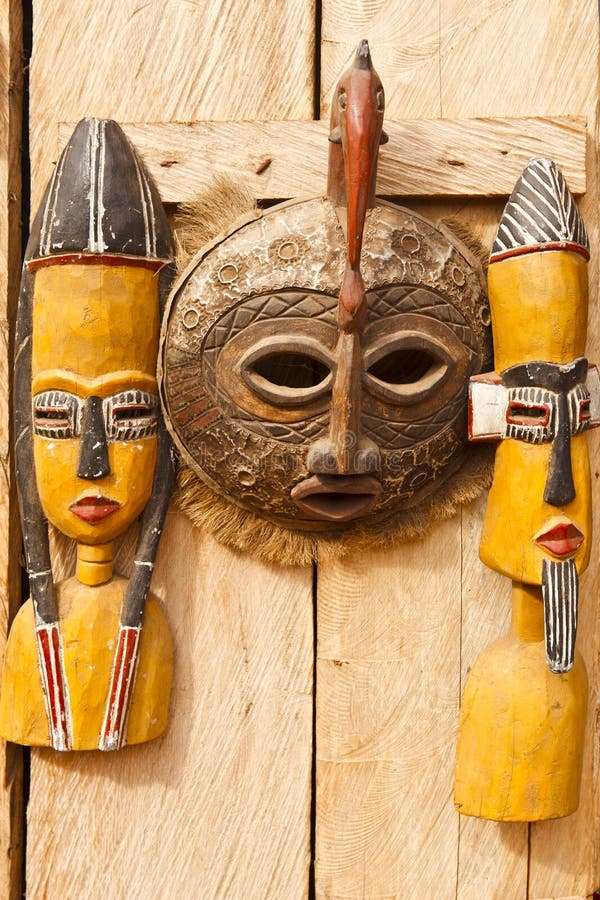
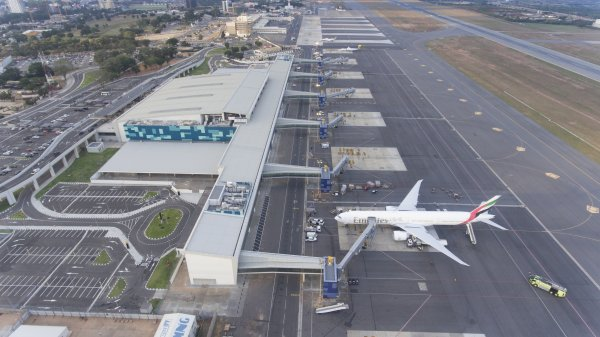

Welcome to Ghana
Discover Ghana Culture History and Adventure for Dutch Travellers.
Explore more

Discover Ghana Culture History and Adventure for Dutch Travellers.
Explore moreLong before European traders arrived, the land now called Ghana was home to powerful kingdoms such as the Ashanti Empire, known for its gold, craftsmanship and organized government.
Trade routes connected the region with the rest of West Africa, and its culture and traditions still shape the country today.
Learn More
Travel around Ghana for fun and activities, this is an Independence Arch in Accra.
Explore Activities
Explore the designs of African art, local crafts, culture food and cloths.
Learn More
Check visa and health info, then build your day.
Build your day